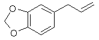
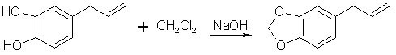
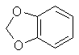
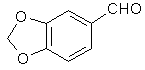
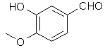
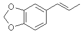
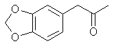

|
Safrole, piperonal, and isosafrole are generally the first step for any of the syntheses outlined in this book for the preparation of MDA, MDMA, and MDEA. They are all found to some extent as essentials oils in many botanical species. This affords a last resort means of obtaining any or all of them, forever. That is assuming that the DEA and their puppets around the world don't wage war on most of the plant kingdom. These compounds have pleasant although potent aromas and as such have been used in perfumery for countless years. That makes obtaining them that much easier. The DEA knows this too and is keeping an increasingly close watch on their distribution as well as taking action to make them illegal to possess in these forms. Each of them individually are already listed precursors which makes their possession illegal. Legal manipulation may extend this listing to include perfumery products if one were caught with them and it were alleged that drugs were going to be produced. No sweat for our just and caring legal system. Syntheses for these compounds have existed in the scientific literature for decades due to their importance in perfumery. The bulk of this chapter will focus on those syntheses. Safrole[94-59-71] 1,3-benzodioxole, -5-(2-propenyl); Safrole; 1-allyl-3,4-methylenedioxybenzene Safrole is the most common and easily obtainable of any of the necessary precursors. It can also be used to make isosafrole and piperonal. Safrole is the main constituent of sassafras oil (70-80%)[11] and Ocotea cymbarum oil[12] (90%, aka-- Brazilian oil of sassafras). The oil of massoria bark[13], Cinnamomum massoia, contains 79% phenols which is mainly eugenol. The oil after being freed of phenols by washing with alkali solution contains a lower boiling fraction of mostly terpenes (7% of oil) and a high boiling fraction of mainly safrole (14% of oil). Camphor oil from the camphor tree[14] is another source of safrole as a by product in the manufacture of camphor. Safrole is contained in the high boiling fraction of the oil mainly between 228-235°C. The percentage of safrole in the oil depends mainly on the source tree variety. Safrole is also found in much smaller amounts in countless other plant oils around the world. Sassafras oil is derived from the root of the sassafras tree which grows in the mid to eastern United States as well as other sassafras species elsewhere in the world. The dried root bark contains up to 10% oil by weight and the rest of the root 1%. Many botanical companies sell sassafras root bark by the pound at a 1994 price of around $15/lb. Bigger companies sell larger quantities for much less per pound. Local herb/naturalist/health food type stores usually sell this in there herb section; though, not for consumption due to safrole's listing as a suspected carcinogen. In these same stores, one can usually find essential oils by the ounce or larger size. Sassafras oil is one of these essential oils. If a store has such a section, but does not have sassafras oil, do not hesitate to ask them to order it for you (just not in large quantities). It makes a nice gift. Aroma therapy is a large consumer of essential oils today. They are also used as adulterants in massage oils in connection with aroma therapy. Ocotea cymbarum oil is derived from the wood of Ocotea pretiosa which grows in South America (more specifically Brazil, Paraguay, and Columbia). The wood contains 1% oil by weight which may not sound like much until one considers easily cutting down a thousand pounds worth of tree. Carefully steam distilled wood chips yield oil containing not less than 90% safrole. You may not find this by name in the herb shops, but it is sometimes substituted for sassafras oil since without analysis you can not tell the difference. The large distributors of perfumery and flavoring chemicals may have Ocotea cymbarum by name. Many of these companies sell as small as pound quantities. In pound and kilogram quantities, Their prices can't be beat. The ounce bottles sold by health food stores have greatly inflated prices. Check the OPD directory for essential oil and botanicals companies. Small herb shops nationwide that sell by mail order can be found in The Catalog of Catalogs ($2 at Books a Million) also check your local phone book. ExtractionExtracting sassafras oil from root bark is easy. The hard part is learning to identify the tree and then digging up the roots. The easiest way to learn to identify the tree is to visit an arboretum. The leaves alternate on the stem and are of three shapes. Often all three shaped leaves are on the same tree. They are 3" long and 1 1/2-4" wide. When a tree is located, dig up the roots. Wash them and scrape off all of the bark. The oil can now be steam distilled from the root bark scrapings. As steam passes through the roots, it extracts oil through azeotropic distillation and the oil and water condense in the condenser. The oil and water are then collected in suitable sized containers. The oil can be seen as tiny droplets in the condensing water. When no more droplets are see all of the oil has been extracted.Separate the oil from the water by pouring off the excess water and then pouring the rest into a separatory funnel to separate oil from the remaining water. The oil is heavier than water. Dry the oil with calcium chloride or other drying agent and place in a boiling flask for distillation. Collect the portion boiling from ~228-235°C, this is safrole. The main other fraction will pass at lower temps and consist mainly of pinene. Using reduced pressure is highly recommended since it is hard to maintain an oil bath at this high a temperature. The yield will also be decreased at higher temperatures due to destruction of the safrole. At 10-11 mmHg safrole bolls at 100-101°C. Isolate safrole from commercial oils by similar distillation of the oil. Safrole from PyrocatecholPyrocatechol, catechol, forms a monoallyl ether with allylbromide that undergoes Claisen rearrangement to 3-and 4-allylpyrocatechol (1,2-dihydroxy-3-allylbenzene and 1,2-dihydroxy-4-allylbenzene). This mixture can be fractionally distilled to isolate the 4-allyl product and then methylenated to safrole. This method was first reported by Perkin and Trikojus[15] and later by Gerchuk and Ivanova[16]. The yield of allyl catechols from the monoallyl ether is 90% but only 44% of the product is 4 allyl catechol. The yield of safrole after methylenation is only about 20% from 4-allyl catechol as reported by Perkin. Bonthrone and Conforth[17] reported on an improved method of methylenation giving yields from 69-94% for various alkyl catechols. 4-allyl catechol via the monoallyl ether of catechol132g of catechol and 144g of pure allyl bromide are dissolved in 220ml of pure dry acetone, finely powdered anhydrous potassium carbonate (170g) is gradually added with shaking of the mixture to prevent caking. The mixture is refluxed 6-8 hrs on a water bath with the condenser fitted with a calcium chloride tube to absorb moisture from the air.The acetone is distilled off. Add ~50ml water and dilute sulfuric acid until acidic (blue litmus paper turns red). This is then extracted with an equal portion ether. The ether is separated and washed with dilute sodium hydroxide solution to remove unreacted catechol and the monoallyl ether from the ether (the diallyl ether remains in the ether). The aqueous layer is acidified with dilute sulfuric acid and the oil which precipitates is removed from the water by dissolving in chloroform and separating the layers in a separatory funnel. The chloroform is removed by distillation and the oil distilled under reduced pressure. This sequence of purification takes advantage of the fact that hydroxy groups on benzene rings are reasonably acidic, but the diallyl compound has both of it's hydroxy groups converted to allyl ethers. 92 g of the monoallyl ether are heated in a reflux apparatus with an oil bath to 170-180°C. The contents of the flask will rise in temperature suddenly to 265°C and the color will change to red. Fractionally distill the contents under reduced pressure (15-16mm Hg) at one or two drops per second. Collect the first portion from 142-152°C (66g) and the second from 152-160°C (17g) a residue of about 9g will be left. Clean the flask and refractionate the first portion collecting at the same temperatures as before. Continue this process until a good separation is achieved. Do the same for the second fraction as well. Pure 4-allyl catechol boils at 156-158°C at 16 mmHg and has a melting point of 48°C. 4-allyl catechol from eugenolA better method by far for producing 4-allyl catechol is to remove a methyl group from eugenol. Eugenol like the main precursors is found in essential oils. Clove oil is mostly eugenol (95%). Allspice oil from the pimenta berry and cinnamon leaf oil also contain a high percentage of eugenol. Many other oils contain reasonable quantities of eugenol.Imoto and Ono, Journal of the Chemical Society of Japan, vol 55, pg 275-9 (1934) (Chemical Abstracts 4048' vol 28) report on cleaving methylene ethers of several compounds by refluxing the compound with AlCl3 in chlorobenzene as solvent. This method should be perfectly applicable to cleaving eugenol's methyl ether (experiment is king). Yields were as high 96% (for piperonylic acid) with chlorobenzene as solvent. 1,2-dicloroethane as solvent gave yields of 90% for demethylenation of piperonylic acid, chloroform 70%, and nitrobenzene 3%. Generally the chemist would reflux (with stirring) 164g dried eugenol (1 mole) in 1000g of chlorobenzene and add in several portions AlCl3 (totaling 500g) over 2.5 hours in a reflux apparatus fitted with a calcium chloride tube. After refluxing add dilute hydrochloric acid (15-20%) to the warm solution with stirring until the mixture is definitely acidic to congo red indicator. Extract the aqueous layer with several portions of ether. Extract the ether with portions of dilute 5% sodium hydroxide solution. Acidify the aqueous solution and extract with ether. Separate the layers and distill off the ether and collect the product. The original article will have to be consulted for their exact method and purification scheme. See under piperonal for other demethylation procedures that can be applied. Methylenation of 4 allyl catechol Bonthrone and Cornforth strictly exclude moisture and air in their methylenation procedure as well as employing a polar aprotic solvent. They do this under an inert atmosphere of nitrogen and introduce the reactants through a special apparatus of their own design. Similar yields should be obtained without their special introduction of reactants.A mixture of 100ml methylene chloride and 500ml dimethylsulphoxide is stirred and heated to 125-130°C in a reflux setup on an oil bath. The top of the reflux condenser is fitted with a one hole stopper with a short glass tube in the hole. To the glass tube is connected rubber or vinyl tubing which is connected to a T. One end of the T is connected to cylinder of nitrogen with tubing and the other to a glass tube in a two holed stopper. The stopper is placed in a test tube containing oil (1/4 to 1/3 full). The other hole of the stopper is left open. This setup feeds a stream of nitrogen into the apparatus while allowing a pressure release through the test tube. If the nitrogen purchased is not dry it will need to be run through a flask containing calcium chloride. Lift the condenser up out of the flask to allow nitrogen to flush through the condenser. Allow the nitrogen to blow into the flask at the same time so it is flushed out too. Any leak in the apparatus will only allow nitrogen to escape as opposed to air and moisture entering. Add 7.55g 4-allyl-catechol and 4.15g sodium hydroxide simultaneously through the top of the condenser with a powder funnel. Repeat this addition every 5 min. (19 times) for a total of 151g (1 mole) 4-allyl catechol and 83g sodium hydroxide. After an additional 20 min. add 20ml methylene chloride and 3g sodium hydroxide. Continue stirring for 70 min. Alternate to adding the reagents in portions, the entire amount can be added at once with about a 10-15% decrease in yield. 4-allyl catechol is added in small amounts above to keep a low concentration of the dianion so that side reactions are minimized. Still add the additional methylene chloride and sodium hydroxide at the 1.5 hr mark. Steam distill the final solution in the same manner as safrole is steam distilled from root bark (using glassware setup). Separate the oil from the distillate water, dry with calcium chloride or sodium sulfate, and redistill under reduced pressure. Safrole from benzodioxole Feugaes[18] reports an 87% yield of safrole (abbreviated R-CH2=CHCH2) from benzodioxole (3,4-methylenedioxybenzene, designated R) by the Grignard reaction of RMgBr with allyl bromide (CH2=CHCH2Br). The reagents in Grignard reactions must be absolutely dry and the glassware flame dried prior to use. The author here uses tetrahydrofuran as solvent which even when purchased dry usually has to be dried by distilling with sodium metal under an atmosphere of dry nitrogen.L. Bert[19] gives a synthesis of safrole by the Friedel-Crafts reaction of benzodioxole and 3-chloro-allylchloride (CH2ClCH=CHCl2) then reducing the chloride compound formed to safrole with sodium. This journal is not in English so I can not give you the details. Benzodioxole can be synthesize from catechol by methylenating it by the same procedure as safrole and substituting 4-allyl-catechol with 110g of catechol. Similar to the above method, allyl chloride and benzodioxole can be reacted in the presence of copper to form safrole in 30% yield[20]. CatecholCatechol like it's isomer hydroquinone has been used in black and white photography as a fine grain reducing agent. Hydroquinone is more common in this role, but ready mix solutions have replaced almost all intelligence in photographic development today. Catechol has a long history in the chemical literature such as it's isolation from waste liquor in the manufacture of wood pulp and other ligninous materials. All woods contain phenols such as catechol in there complex lignin structures and these are freed when the wood is processed. Much work has been done in isolating these materials economically. The other most common citations for catechol is it's preparation from phenol by hydroxylation with hydrogen peroxide yielding a mixture of catechol and hydroquinone. Many catalysts have been recommended for this process. o-Chlorophenol has also been hydroxylated to catechol. Organic Syntheses Collective Vol 1. (pg 149-153) gives two procedures for catechol's preparation. The first is from hydrogen peroxide and salicyaldehyde and the other from guaiacol and HBr.Halogen Derivatives of SafroleThe use of halogen derivatives of safrole to arrive at MDMA is probably the simplest method of all even though it is the least commonly used in the chemical literature. There are two general ways the halogen derivatives are formed: 1) The hydrogen halide gas is passed directly into the safrole or safrole in solvent 2) Concentrated halogen acid added to the safrole. Both can be used simultaneously. (Hydrogen halide gas into a mixture of safrole and halogen acid.) The two concerns here in terms of side products are polymerization and demethylenation.BromosafroleThis is the intermediate used in the first synthesis of MDMA by Merck[21] and later repeated by Biniecki and Krajewski[22]. The authors used 70% Hydrobromic acid which is not the commonly available strength (48%) since at normal temperatures it's solubility in water is 48%. The reaction was run at 0°C where side products are minimized and the solubility of HBr is greater. Running HBr gas into the 48% strength can raise the concentration at this temperature. Sakakibara[23] added safrole to hydrobromic acid with a density of 1.8 (47% is d 1.49) at 0°C. Mueller[24] bubbled HBr gas through safrole and 42% HBr at 0°C.(from Biniecki) 5.3g of safrole are cooled and added dropwise to 21g of HBr at 0°C. The mixture is left at 0°C for 14 hours. (Keep in an ice salt bath on a magnetic stirrer) The mixture is poured on crushed ice and extracted with two 30ml portions of ether. The ether is dried with anhydrous potassium carbonate, distilled off, and the residue distilled in vacuum, bp 154-158°C/13-14mmHg (reported yield 97%). with HBr and acetic acid[25] This procedure was preformed with allylbenzene and should work equally well for safrole. 200g of glacial acetic acid containing 150g of HBr gas is placed in a 500 ml flask and chilled in an ice bath (Uncle Fester modifies this to 200 ml of acetic acid (chill) and then add 300g (200ml) of chilled 48% HBr slowly keeping the temperature down). 100g of safrole is added slowly to keep the temperature down. Stopper the flask. Leave in the ice bath and allow it to come to room temperature as the ice melts with occasional shaking. In 10-12 hours the two layers merge into one clear red solution. In 24 hours, the reaction is complete and the solution is poured onto 500g of crushed ice in a 1000ml container. The smaller red layer is seperated in a separatory funnel and the water layer extracted with a small portion of ether (100ml) or methylene chloride. The extract is combined with the red bromosafrole layer and washed with several portions of water and calcium bicarbonate solution to remove acid present. Remove the ether or methylene chloride by distillation and use the bromosafrole as is. lodosafroleUse of 57% hydriodic (see misc. chemicals chapter) in the above procedure would yield iodosafrole with a similar yield and faster reaction time. The boiling point would be higher than that of bromosafrole.ChlorosafroleUse of chlorosafrole would be the most attractive derivative in terms of availability since HCl is easily generated from salt and sulfuric acid. The downside to this is an extended reaction time from that of the more reactive HBr. The yield would almost surely be lower. With the extended reaction time polymerization would play a greater role, but could be overcome by dissolving the safrole in benzene or ligroin (VM&P naptha paint thinner). These solvents were shown to eliminate polymerization in the reaction of HCl with isosafrole. (Chemical Abstracts 3774c (1947) (isosafrole gives the halogen in the wrong position) Chlorosafrole's boiling point would lie between that of safrole and bromosafrole.Piperonal[120-57-01] 1,3-benzodioxole-5-carboxaldehyde; Piperonal; Heliotrope; 3,4-methylenedioxybenzaldehyde Piperonal otherwise known in the perfumery world as heliotrope is derived naturally from the flower hyacynth. It is also available through perfume suppliers and herb type stores as hyacynth or heliotrope (sometimes dissolved in alcohol). The chemist might procure a sample of piperonal and then scout out all the cheap perfumes that they can find for a match. That is about the end of the reasonable procurement of this compound, but much work has been done on it's synthesis over the years. Piperonal from isosafroleThe most common citation for piperonal's synthesis is by oxidation of isosafrole with O3 (ozone). One of the more interesting papers[26] reports a yield of 96% of piperonal from isosafrole. See Handbook of Preparative Inorganic Chemistry for how to construct an ozone generator.Another oxidation reports yields from isosafrole of 47% by potassium dichromate (K2Cr2O7) and H2SO4 oxidation[27]. In the same paper, potassium permanganate was also utilized with a yield of 8% (Most the isosafrole being oxidized to piperonylic acid). Solvent extracts of black pepper contain compounds that can be treated with the above methods to yield piperonal. Refer to Guenther, The Essential Oils Vol, 5. pg. 144-147 for details on the extraction and contents. The three main components are shown below. Each would split at each double bond and form an aldehyde group at those carbons. Piperonal from catecholVia piperonyl chlorideShorygin et.al., Journal of the Chemical Society of the USSR, vol. 8, 975-80 (1938); Chemical Abstracts 3777 (1939) report a synthesis of piperonal from pyrocatechol in the following steps: catechol → benzodioxole → piperonyl chloride → piperonal. The reported yield for methylenating catechol is low so the method previously reported in this book could be used. The interesting thing is his use of chloromethylation (see Organic Reactions, Chloromethylation of Aromatic Compounds) and then reacting this with hexamine (hexamethylenetetramine, uropine) to give piperonal. The piperonyl chloride could also be reacted with copper nitrate or copper chloride, CuCl2 to give piperonal as in the method reported by Professor Buzz in Recreational Drugs for benzaldehyde (pg. 116) (real easy).Photo-Reimer-Tiemann[28]Since dihydroxybenzenes are sensitive to air, especially in alkaline solution, the Reimer-Tiemann reaction is not generally applicable to catechol; however, the photo reaction is and gives yields of approximately 29% for the desired isomer. Using the normal Reimer-Tiemann reaction Graebe and Mantz[29] report a yield of 11% for the desired isomer.The precise route to piperonal is catechol → protocatechualdehyde → piperonal. A carbonyl (aldehyde) group is added to catechol with the photo-Reimer-Tiemann reaction and then it is methylenated with the same procedure as 4-allyl catechol. Protocatechualdehyde is also know as 3,4 dihydroxy benzaldehyde, 3,4 dihydroxybenzenecarboxaldehyde and protocatechuic aldehyde. The authors dissolved the reagents in an incredible excess of solvent and separated the products with preparative TLC. The following is a suggested modification allowing a reasonable purity. Dissolve 33 g of catechol in 100ml of 90% aqueous methanol and 20 g of chloroform in an erlenmeyer flask.. While stirring, irradiate with three 70 watt mercury vapor lamps (those sold for flood lighting) placed symmetrically around the the flask for 5-10 hrs. Remove the solvent in vacuum and then add 40ml of nearly boiling water and stir momentarily. Let the layers separate while keeping the whole hot on a hot plate. Decant the water from any organic material not dissolved while still very hot and then cool the aqueous layer with an ice bath. Filter the crystals that form. Wash the crystals with very small amounts of ice cold water. Methylenate the protocatechualdehyde with the procedure in the safrole section replacing the 4-allyl catechol with 138 g of protocatechualdehyde. Gattermann Synthesis of AldehydesIn the normal Gattermann synthesis, hydrogen cyanide is introduced to an etheral solution of the phenol and anhydrous aluminum chloride. In a modification to this this procedure, hydrogen cyanide and zinc chloride are generated in the reaction mixture. Zinc chloride has been demonstrated to be a good condensing agent in these reactions in place of aluminum chloride. Water must be carefully omitted in the Gattermann reaction by using anhydrous reagents and solvents. Although no specific example for catechol is cited, much experimentation has been done on dihydric phenols and their ethers with the Gattermann reaction showing that the aldehyde group enters para to the hydroxy group when available and in good yields (normally 80-100%) for these phenols. Consult Organic reactions under the heading Gattermann Synthesis of Aldehydes for details on the reaction. For substitution of hydrogen cyanide gas with zinc cyanide, see: Adams and Montgomery, Journal of the American Chemical Society, vol 46, pg 1518, 1924. and Adams and Levine, I vol. 45, 2373, 1923.The Gattermann synthesis can be used to introduce the aldehyde group to catechol and then methylenate it to piperonal (as in the procedure in the safrole section replacing the 4-allyl catechol with 138 g of protocatechualdehyde.) or methylenate catechol to benzodioxole and then add the aldehyde group. Hydrogen cyanide is extremely dangerous and if the chemist values his life he will heed all precautions. 1) Place the entire apparatus in a fume hood. 2) Check all connections for leaks. 3) Wear rubber gloves. 4) Consult texts on handling dangerous substances and first aid for cyanide poisoning. 5) Wearing a gas mask with filters for hydrogen cyanide is also highly recommended. Anhydrous hydrogen cyanide can be purchased in cylinders; although it is not sold to just anyone. The acid can also be prepared by reaction of sodium cyanide with sulfuric acid (Ziegler, Organic Syntheses, Collective Vol. 1, 2nd ed., pg 314, John Whiley and Sons, 1941.). It is also prepared from potassium ferrocyanide in the following procedure. 400 g of potassium ferrocyanide are heated in a 2L flask with a mixture of 320g of concentrated sulfuric acid and 560ml of water (dilute the acid by adding it to the water, cool, then add to the potassium ferrocyanide). Place a condenser in the flask with a one hole stopper fitted with a glass tube on the other end. To the tube, fit tubing and lead through consecutive flasks containing calcium chloride and then an empty flask to dry the gas. (The flasks will need to be kept warm (35-40°C, heating pad) since hydrogen cyanide condenses at 26 C. Mix the calcium chloride with some glass wool to allow the gas to more freely pass through.) Piperonal from BenzodioxoleFeugeas (see safrole from benzodioxole) also gives a synthesis for piperonal (RCHO) in 65% yield from RMgBr and HCONHMe (methyl formamide).Piperonal From VanillinVanillin can be used to synthesize piperonal. The route is vanillin → protocatechualdehyde → piperonal. Vanillin's methyl ether is cleaved and then the protocatechualdehyde is methylenated to piperonal. Vanillin is the flavor of vanilla. The extracts from the store are quite watered down and normally expensive. Sometimes one can find large bottles of extract cheap. Large flavoring companies would probably be glad to sell you a heap of the pure stuff. Vanillin's methyl ether is difficult to cleave under the conditions normally employed for demethylation according to Robert Lange[30]. Lange cites references to this fact referring to their low yields (less than 50%) when using such reagents as dilute HCl, HBr, phosphorus pentachloride, aluminum chloride in benzene. No mention of the use of aluminum chloride in chlorobenzene was given as is cited for possible use with demethylation of eugenol. That method may be worthy and should be tested. Reference was given to the first high yielding method by using aluminum bromide in nitrobenzene to yield 93% of protocatechualdehyde from vanillin. Lange goes on to present his demethylation procedure of vanillin with aluminum chloride, and pyridine in methylene chloride as solvent. Pyridine is a very hot chemical and is best avoided so I refer you to the original reference for the details. The procedure given there is easy enough to follow. Pearl and Beyer[31] report on the method of aluminum bromide in nitrobenzene for demethylation of vanilla as follows: In a fume hood. A solution of 15.2 g (0.1 mole) of vanilla in 45 ml of nitrobenzene at 15°C is treated with a solution of 53.4 g of anhydrous aluminum bromide in 60ml of nitrobenzene. 125 ml of nitrobenzene are added to the gel which forms with stirring. (do not breath nitrobenzene vapors or let contact with skin. If contact occurs flush area with water for 15 min.) Heat solution to 95°C and then let cool to room temperature. Allow to stand at room temperature for 30 minutes. The dark mixture is cooled and added to IL of water containing a little HCl. The mixture is extracted with ether and the ether is then extracted with 5% sodium hydroxide solution. The hydroxide solution is washed with ether and then acidified with dilute sulfuric acid. The acidic solution is extracted with ether, dried, and then distilled off to leave 12.8 g of protocatechualdehyde. Methylenate this with the procedure listed in the safrole section replacing the 4-allyl catechol with 138 g of protocatechualdehyde. Hayashi and Namura[32] discuss demethylation during the pulping process and conducted experiments on individual components under such conditions. Eugenol and vanillin were both demethylated by cooking with either 5% NaOH or 5% Na2SO4, 1% NaHCO3 and H2O. The degree of demethylation is not given in the abstract but it is in the paper which luckily is in English if one cares to look it up. The reaction does proceed slowly. Isosafrole[120-58-1] 1,3-benzodioxole, 5-(1-propenyl); Isosafrole Isosafrole is not found in any large amount in essential oils; although it is present in quite a few. That makes its preparation a must since obtaining it from chemical suppliers is extremely risky or impossible. Thankfully it is a pretty straight forward procedure to isomerize safrole to isosafrole. Waterman and Preister[33] report on isomerizing safrole to isosafrole by refluxing 1 kg of safrole, 2.5kg 96% alcohol (presumably ethanol), and 450g potassium hydroxide for 25 hrs to obtain 55% isosafrole and 45% unchanged safrole. The authors removed safrole by dissolving it with aqueous mercury acetate solution (Hg(OAc)2). Alternate to this is to remove the alcohol with reduced pressure (to speed the distillation up), filter out the KOH and fractionally distill the mixture under reduced pressure. Safrole boils lower so when you get two fractions with distinct boiling points the higher is isosafrole. Using anhydrous ethanol will more than likely increase the yield of isosafrole. Similar to this but using 2.2 times as much potassium hydroxide, a higher concentration alcohol, and autoclaving for 2 hrs. 90% conversion has been achieved Chemical Abstracts, Brazilian oil of sassafras, vol 45, 3618i. Two Japanese patents, Japan 5331 (1951) and Japan 5987 (1951), report on heating safrole with calcium oxide and potassium hydroxide to obtain safrole in 90 and 95% yields. Add 15g calcium oxide and 1g potassium hydroxide to 100g safrole in a flask and place in a reflux apparatus. Heat with a flame to reflux for 15 min. Filter out the CaO and KOH and distill under reduced pressure. Calcium oxide is common known as lime, but do not confuse this with limestone, CaCO3, commonly sold as lime at garden shops. Riezebos, et. al., Rec. Trav. Chim. Pays-Bas, vol 86, pg 31-32 (1967) (in English), report on isomerizing 500g safrole with 2.5g Fe(CO)5(iron pentacarbonyl) and 1.6g KOH to obtain 97% isosafrole. Nagai, Journal of the Society of the Chemical Industry of Japan, vol. 29, 364-70 (1924); Chemical Abstracts vol. 21 pg 72, reports an 85-90% yield of isosafrole by heating 100g safrole, 5g KOH (potassium hydroxide), and 150g anhydrous ethanol. This is then heated under 6-8 atmospheres of pressure for 5-6 hours. Hirao, Journal of the Society of the Chemical Industry of Japan, vol. 29, pg 241-7 (1926), Chemical Abstracts pg 379 (1927), reports on using minimal amounts of alcoholic potassium hydroxide to convert safrole to isosafrole. The presence of even very small quantities of water greatly hinders the reaction in this procedure. This has been unsuccessfully repeated by other investigators. Isosafrole from BenzodioxoleFeugeas (see safrole from benzodioxole) also gives a synthesis for isosafrole (RCH=CHMe) from RMgBr by first reacting with propanaldehyde (EtCHO) with an 81% yield and then with para-tolulenesulfonic acid to give isosafrole in 79% yield. The reported boiling point at 17 mmHg is 131°C.Piperonylacetone 2-propanone, 1-(1,3-benzodioxol-5-yl); 2-propanone, 1-(3,4-methylenedioxybenzene); 3,4-methylenedioxyphenylacetone; methyl piperonyl ketone; MDP2PBoiling point 2 mmHg/108-12°C, 11 mmHg/154-6°C, 22mmHg/166-7°C (also reported 168°C @ 17 mmHg); Molecular weight 179 g/mole Piperonylacetone, a listed precursor, is used in some of the higher yielding and more common methods for MDMA and it's structurally similar compounds. Several methods are given in the chemical literature for preparation of piperonylacetone with varying yields and staring materials. Phenylacetone which is structurally closely related to piperonylacetone is prepared by these same methods and many others which could be applied to piperonylacetone's synthesis. Piperonylacetone from IsosafroleIsosafrole can be oxidized by peracids to it's diol derivative (or more specifically it's hydroxy formate in the case of performic acid--not depicted) and subsequently heated with sulfuric acid to form piperonylacetone in moderate yields.For in depth coverage of this reaction, see Organic Reactions, Epoxidation and Hydroxylation of Ethylenic Bonds with Organic Peracids. This reference also contains instructions for generating perbenzoic acid from benzaldehyde and air by photochemical means (real easy) (benzaldehyde is the major component of bitter almond oil). See Milas, Kurz, and Anzlow, The Photochemical Addition of Hydrogen Peroxide to Double Bonds. Journal of the American Chemical Society, vol. 59, pg 543, (1937) for another good reference. Performic Acid OxidationFugisawa and Deguchi[34] report on oxidizing isosafrole with performic acid by generating the performic acid in the reaction mixture.A solution 34g 30% H2O2 (hydrogen peroxide) and 150g of 80% HCO2H (formic acid) is stirred. To this is added dropwise 32.4g of isosafrole in 120ml of acetone. Add slowly enough to keep the temperature from rising above 40°C (about I hr). Continue stirring for 16 hrs while keeping the temperature below 40°C. Remove the solvent and formic acid with distillation under reduced pressure. A deep red residue will be left amounting to about 60g. Dissolve this residue in 60ml of methanol and 360g of 15% sulfuric acid. Heat on a water bath (boiling) for 3hrs in a reflux apparatus. Cool the solution and extract with 3x75ml portions of ether. Combine the ether extracts and wash first with water and then 5% sodium hydroxide. Remove the solvent in vacuum and distill the residue to yield approximately 20.6 g piperonylacetone (58% yield). Kojima, et. al., Japan. Kokia 74 100,044; Chemical Abstracts vol. 82, 72640z (1974), report a similar method as above, but they used somewhat higher concentrations of reactants (not as commonly available) and dichloroethane as solvent. The reported yield is 73%. Peracetic Acid OxidationHoffsommer[35] report on converting isosafrole to piperonylacetone by using peracetic acid in ethylacetate. The authors used prepared peracetic acid as opposed to generating it in situ. It can be generated, though, with acetic acid and hydrogen peroxide by using a slight excess of hydrogen peroxide over isosafrole and excess acetic acid as solvent. A second oxidation using pertrifluoroacetic acid is also given. No yield is given.Permanganate OxidationPotassium permanganate as a cold 2% solution in water (4258ml water + 86.9g KMnO4 (0.55moles)) will oxidize double bonds to a diol with the precipitation of manganese dioxide. This is commonly used as test for double bonds. Warm, slightly acidic, or concentrated solutions will cause further oxidation resulting in cleavage of the double bond. Add the above purple solution to 89.5g (0.5 moles) of isosafrole with stirring in an ice bath. As the reaction proceeds, manganese dioxide will precipitate as a brown-black solid and the purple permanganate color of the aqueous layer will gradually disappeared. When the color no longer lightens, stop stirring and pour off the excess aqueous layer. Filter the remaining aqueous and organic layers to remove the manganese dioxide and wash the precipitate with water. Extract the filtrate with ether (or toluene, benzene, etc). Remove the solvent in vacuum and treat the residue as in the performic oxidation above. (where it is dissolved in methanol and sulfuric acid). Alternative to beginning with a dilute solution of permanganate, a more concentrated solution could be added to the compound and a small amount of dilute solution. In this way, the permanganate is consumed as it is added so it remains diluted in the reaction flask.Piperonylacetone from Beta-nitroisosafroleThe nitrostyrene formed from the condensation of piperonal with nitroethane can be converted to the ketone, piperonyl acetone, by reaction with elemental iron in acetic acid[36].A stirred suspension of 32g iron fillings in 140 glacial acetic acid is gradually warmed on a steam bath. When quite hot but no white salts apparent, add dropwise a solution of beta-nitroisosafrole in 75ml acetic acid. (see MDA for the nitrostyrene, beta-nitroisosafrole, synthesis) Add the solution quickly enough to allow the reaction to proceed vigorously without excessive frothing. The orange color of the reaction mixture will turn reddish with white salts and a dark crust. The product will appear as a black oil on the sides of the flask. The mixture is added to 2L of water (use some of the water to wash the product free from the flask). This is then extracted with three 100ml portions of CH2Cl2 (methylene chloride). The extracts are combined and washed with several portions of 5% NaOH (sodium hydroxide). After removal of the methylene chloride under reduced pressure the residue is distilled under reduced pressure to yield approximately 8g of piperonylacetone. Piperonylacetone from the Dichloro Derivative of IsosafroleYuki[37] reports on piperonylacetone from 1-(3,4-methylenedioxyphenyl)dichloropropane and KOH.Chlorine and the other halogens react readily with double bonds (like the one of isosafrole's) to form dichloro compounds in solvents inert to the halogens. The most commonly used solvents are CH2Cl2 (methylene chloride), CHCl3 (chloroform), and CCl4 (carbon tetrachloride). Running a stream of chlorine in a solution of isosafrole in one of these solvents from a cylinder or chlorine generator (see misc. chemicals chapter) will produce the appropriate dichloro compound. Use of bromine will generate the dibromo compound which could be used in place of the dichloro compound. Bromine reacts quickly in carbon tetrachloride. It is bromine in carbon tetrachloride that is used as a test for double bonds since the solution is clear red and the red color disappears as the bromine reacts. Chlorine will react slower. If water is present, a chlorohydrin will be formed which would probably react similarly to give the ketone. Experiment is king. 23.2 g (0.1 mole) of 1-(3,4-methylenedioxyphenyl)-1,2-dichloropropane is refluxed for 10hrs with 75g of 15% KOH (potassium hydroxide) solution. The mixture is cooled extracted with benzene. The benzene is removed in vacuum and the residue distilled to yield approximately 15.2 g of piperonylacetone (bp 149-151°C/10 mmHg). 85% yield from the dichloro compound. Piperonylacetone from Glycidic EstersElks and Hey[38] report on preparation of the appropriate glycidic ester and it's hydroxylation and decarboxylation to piperonylacetone in 21% overall yield. Hinkley and Budavari[39] report on a similar method of preparing piperonylacetone through the glycidic ester.The method involves condensation of piperonal with ethyl alpha-bromopropionate (sodium methoxide as catalyst) to give the glycidic ester. Hydroxylation with sodium hydroxide, purification, and distillation in the presence copper powder. Other MethodsHashimoto, et.al., Heterocycles, vol. 15, 975-9 (1981); Chemical Abstracts vol. 95, 41756f (1981), report piperonylacetone as a side product in the reaction of piperonal and Me3SiCHN2 in the presence of Et3N.Meguro, Japan. Kokai 77 77,063; Chemical Abstracts vol 87, 184480g (1977), report an 85% yield of piperonylacetone from D-5-methyl-5-(3,4-methylenedioxybenzyl)hydantoin. Phenylacetone MethodsWith appropriate substitution many phenylacetone methods can be used to synthesize piperonylacetone. Yields will vary. Phenylacetone itself when used with the MDA methods yields amphetamine and with MDMA methods yields methamphetamine (equal mole substitution of piperonylacetone for phenylacetone).Hydramine splittingRefluxing ephedrine with phosphoric acid yields phenylacetone. There is no available equivalent to ephedrine that would yield piperonylacetone. No time of reaction or yield is given. Auterhoff and Roth[40].Methods with phenylacetic acidPhenyl acetic acid (listed precursor) could probably be most easily be obtained by oxidizing phenethyl alcohol (phenylethyl alcohol) which is the major constituent of concrete and absolute rose oil (oil obtained by extraction with solvents). Phenethyl alcohol is a minor constituent of oils obtained by steam distillation of the oil from the flowers. Uncle Fester in Secrets of Methamphetamine Manufacture covers several phenylacetone methods in detail. Following is a survey of methods employed for phenylacetone preparation to demonstrate their diversity.Phenylacetic acid and diazomethane. (68% yield) Bacchetti, Chimica e industia (Milan), vol. 35, 619-21 (1953); Chemical Abstracts 162d (1955) Phenylacetic acid, acetic acid, and catalyst. (55-65% yield) Organic Syntheses Vol. 16, 47-50 (1936); Chemical Abstracts vol. 30, 3807. Phenylacetic acid and acetic anhydride. (87% yield) Magidson and Garkusha, Journal of General Chemistry of the USSR (in English), vol. 11, 339-43 (1941); Chemical Abstracts vol. 35,58685, Phenylacetic acid, acetic acid, and catalyst. (70% yield) Zettlemoyer, et. al., U.S. 2,612,524 (1952); Chemical Abstracts 7534g (1953). Phenylacetic acid, acetic acid, and catalyst. (74% yield) Martello and Ceccotti, Chimica e industia (Milan), vol 38, 289-92 (1956); Chemical Abstracts 15454e (1956). Sodium phenylacetate and Isopropylmagnesiumchloride and then react the product with ethyl acetate. (62% yield) Ivanov, et. al., Rev. Chim. Acad. Rep. Populaire Roumanine, Vol. 7, 985-92 (1962); Chemical Abstracts 4254e (1964). Phenylacetic acid, acetone, and catalyst. No yield given in abstract. Le Cryberg, et. al., Ger. Offen. 2,737,511 (1978); US application 716,142 Aug 1976; Chemical Abstracts vol. 88, 152248s (1978). Method with Benzyl ChlorideBenzyl chloride (PhCH2Cl) and sodium give benzyl sodium. This reacted with ethyl acetate gives phenylacetone. No yield is given in the abstract. Tsuruta, Bull. Inst. Chem. Research, Kyoto Univ., vol. 31, 190-200 (1953) (in English); Chemical Abstracts vol 49, 6183b.Method from GlycidatesThe glycidate from benzaldehyde and ethyl alpha-chloropropionate. Dullaghan and Nord, Journal of Organic Chemistry, vol 17, 1183 (1952). The glycidate and HCl. (15 to 30% yield) Dullaghan and Nord, Journal of the American Chemical Society, vol 75, 1764 (1953). Method using Diethyl AcylmalonatesPhenylacetyl chloride (acid chloride of phenyl acetic acid --- phenyl acetic acid + thionyl chloride) and the magnesium ethoxy derivative of diethyl malonate (diethyl malonate + magnesium-- directions given). (71% yield) Walker and Hauser, Journal of the American Chemical Society, vol. 68, 1386-8 (1946); Chemical Abstracts vol. 40, 571271.Friedel-Crafts MethodBenzene and chloroacetone with aluminum chloride catalyst. (yield 32%); Mason and Terry, Journal of the American Chemical Society, vol. 62, 1622 (1940); Chemical Abstracts vol. 34, 624821.Grignard MethodBenzyl chloride + magnesium to yield the grignard reagent. The grignard reagent + acetic anhydride to yield phenylacetone. (52% yield) Newman and Booth, Journal of the American Chemical Society, vol. 67, 154 (1945); Chemical Abstracts vol 39, 11318,Grignard reagent from bromobenzene (watched) with chloroacetone. (22% yield) Kuriaki, J. Pharm. Soc. Japan, vol. 64, 128-9 (1944); Chemical Abstracts 2898i (1951). Etard ReactionPropylbenzene (1-phenylpropane) and chromyl chloride. (15% yield) Wiberg, Tetrahedron Letters, 345-8 (1962); Chemical Abstracts vol 57, 9724b.Cyanide Compound HydrolysisHydrolysis of PhCH(CN)Ac with H2SO4. (77-86% yield) Julian and Oliver, Organic Syntheses Vol. 18, 54-5 (1938).Modified method of above. (85% yield) Zaputryaev, et. al., Med. Prom. SSSR, vol. 14 no. 1, 48-51 (1960); Chemical Abstracts 7154d (1962). From alpha-methyl styreneAlpha-methyl styrene (1-phenyl-1-propene; Benzene, 1-propenyl) and Bromine in 15% sulfuric acid. (51.5% yield). Inoi, Japan 69 09,892 (1969); Chemical Abstracts vol 71, 61016x (1969). |
{kind=link}
{kind=link}
{kind=link}